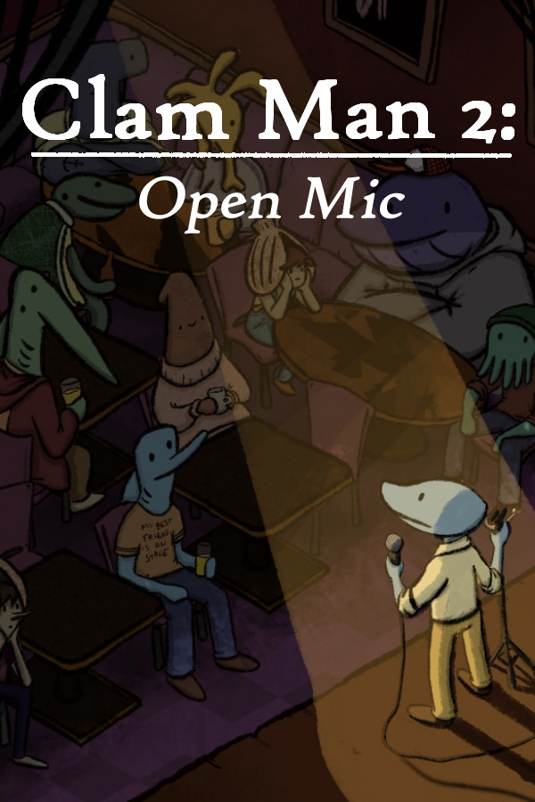

Clam Man 2 - Open Mic
Clam Man 2 - Open Mic
Details
|  | |
| Playtime | Not Played |
| Last Activity | Never |
| Added | 13/08/2020 |
| Modified | Never |
| Completion Status | Not Played |
| Source | Steam |
| Platform | PC |
| Release Date | 19/06/2020 |
| Community Score | 89 |
| Critic Score | |
| User Score | |
| Genre | Adventure Casual Free to Play Indie RPG |
| Developer | marafrass |
| Publisher | Team Clam |
| Feature | Single Player |
| Links | PCGamingWiki Community Hub Discussions Guides Store Page News |
Description
WISHLIST THE FULL GAME HERE:
https://store.steampowered.com/app/1278380/Clam_Man_2_Headliner/
Check out the original Clam Man here!
https://store.steampowered.com/app/1000640/Clam_Man/
About the Game
CLAM MAN 2: OPEN MIC
is the prologue to the upcoming Clam Man 2, a stand-up comedy RPG adventure, and the first day in a week of jokes, quests, and saying a lot of really odd things. It's a combatless, narrative RPG that takes you on an unlikely quest in a very unlikely world. Play as the titular Clam Man and uncover a secret lurking in the basement of Snacky Bay Prime Mayonnaise that will change the course of your life! Do quests, get jokes, and do stand-up!.gif?t=1621272846)
If any of that sounds remotely interesting, give the game a shot! It's free! You've got nothing to lose!
Still not convinced? Alright, let me share some of the other things you can do in this game;
- Faint in an attempt to get out of public speaking
- Lie to a child
- Talk to a prehistoric beast
- Cause an earthquake
- Do standup
THE GAME JUDGES WHO YOU ARE
Four different stats dictate your abilities;- Aquadynamics - your ability to perform physical comedy, mime, act out scenarios or just remain deadpan!
- Improv - the ability to think on the spot, be strange and absurd, or come up with new takes or ideas!
- Detection - your ability to perceive the world and use logic to deduce it! The key ingredient in observation comedy!
- Self-Awareness - how much of an absolute mess you are! Taking a page from games like Fallout: New Vegas and 'dumb' playthroughs, high Self-Awareness could turn you into an empathic, nervous wreck, while Low Self-Awareness will let you be mean to children, slap people, and blurt out the most unbelievable b******t you could think of. Yay for self-deprecating comedy!
.gif?t=1621272846)
TONS OF DIALOGUE
If you're averse to lots of reading, this might get tricky - Clam Man 2 has a LOT of branching dialogue, offering tons of replayability! Dialogues also feature tons of static skill checks that only unlock with the right stats; if a conversation only has a couple of available response options, chances are that other outcomes and absurdities hide behind a different character build!GATHER MATERIALS
In order to do stand-up, you need jokes! In Clam Man 2, quests are character-based with choices to be made and errands to be run, and finishing a quest rewards you with material you can use in your shows! Every quest has multiple endings, and depending on your choices, the resulting joke loot will change, and it's impossible to see even half of all the jokes in a single playthrough! (Completionists beware - it could take around six fully optimized runs to see everything in the game!).gif?t=1621272846)
GET ON STAGE
Each joke you receive from quests will measure your abilities, with classic RPG dice rolls. High stats and the right joke makes all the difference! Succeeding will give you multiple options of where you want to take the joke, and even failing will allow you to choose your destiny in a spiraling maelstrom of stuttering, awkwardness, and pure bad taste. Will you land every joke, or will you bomb your way through your shows?NO FIGHTING
Clam Man 2 is a narrative RPG, with zero combat! (Apart from a part where you can slap a guy in the face.) Furthermore, bombing jokes doesn't lead to a game over - instead, it leads to changes in how characters perceive you, with larger ramifications on the story in the full game! Oh, and you'll also be embarrassing yourself on stage.
YOU ONLY GET A TASTE
Clam Man 2: Open Mic is the entire first day of the full game currently in development, but even so has tons of quests, characters, and dialogue to see! The full game is currently in development, and the response to this will determine the direction, changes, and style of the final game! Every single Steam review will be read to gather feedback!WHO IS RESPONSIBLE FOR THIS
Clam Man 2 is being developed by a solo developer who previously wrote and designed Clam Man, a point'n'click adventure game! You can follow the development on twitter!.gif?t=1621272846)